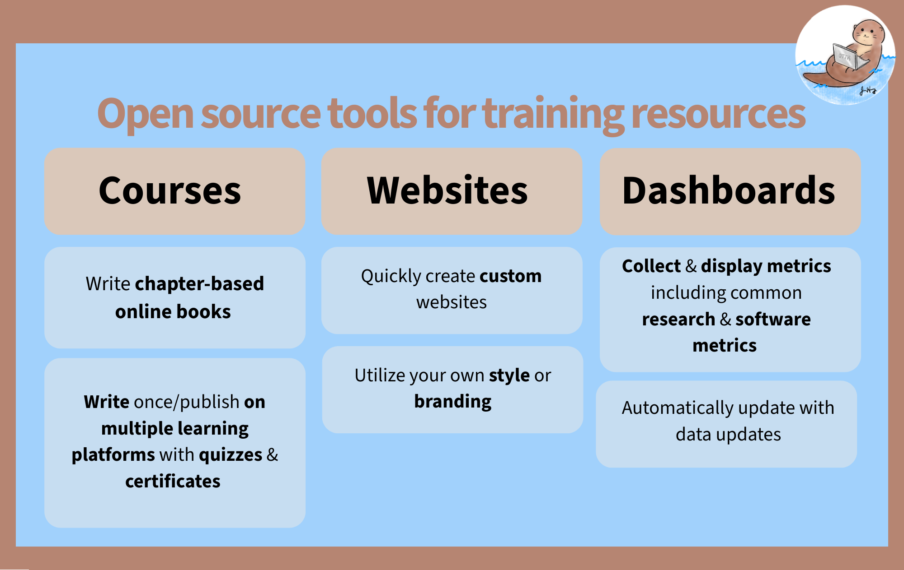
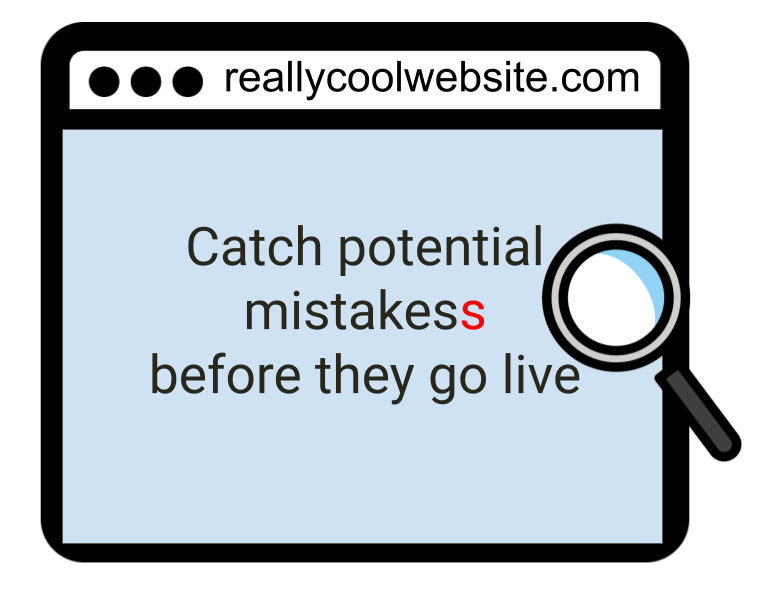
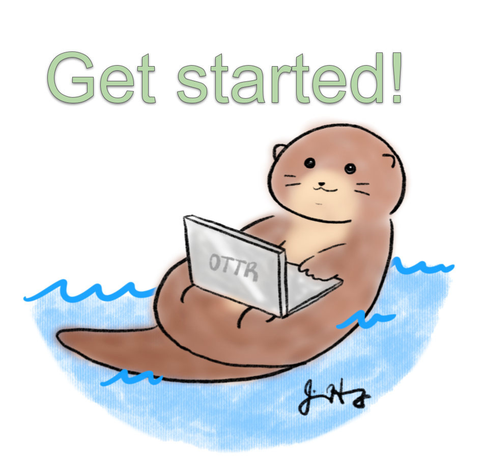

OTTR - Website and Online Course Tools
OTTR (Open-source Tools for Training Resources) is a set of tools and templates to help you make websites, online courses, and dashboards more easily (and for free)!
OTTR templates come in two flavors based on which document format you use to write content: R Markdown (.Rmd) and Quarto (.qmd).
- Quarto is the next-generation successor to R Markdown, developed by Posit. It supports R, Python, Julia, and Observable JS, and offers a more consistent syntax and better cross-language support. It is the recommended choice for new projects and existing
.qmdfiles. - R Markdown is a widely used format that combines plain text, Markdown formatting, and R code chunks into a single document. It has a large ecosystem and is a solid choice if you already have
.Rmdfiles or are following older OTTR tutorials.
If you’re starting fresh or already have .qmd files, go with a Quarto template. If you have existing .Rmd content or are working with a team already using R Markdown, the R Markdown templates are a fine choice.
Posit has shifted its focus to Quarto as the next-generation publishing system. R Markdown remains functional but will not receive new features. For any new project, start with a Quarto template.
Resources for Quarto-fying your content:
- quartify: an R package that automates conversion of R Markdown files to Quarto
- Transitioning from R Markdown to Quarto: a practical guide from Openscapes

Why Use OTTR?
Benefits for all OTTR options
No software installation
Work in GitHub without installing a local publishing tool.
Preview before publishing
Automatically preview content on GitHub before it goes live.
Built-in checks
Automatically check spelling, customize your dictionary, and periodically check for broken links.
Flexible publishing
Customize branding, include code, and avoid version differences with Docker containers.

OTTR in Action
How to Cite OTTR
Please cite the OTTR manuscript.
BibTeX formatted citation
@article{ottr,
author = {Candace Savonen, Carrie Wright, Ava M. Hoffman, John Muschelli, Katherine Cox, Frederick J. Tan and Jeffrey T. Leek},
title = {Open-source Tools for Training Resources – OTTR},
journal = {Journal of Statistics and Data Science Education},
volume = {31},
number = {1},
pages = {57-65},
year = {2023},
publisher = {Taylor & Francis},
doi = {10.1080/26939169.2022.2118646},
URL = {https://doi.org/10.1080/26939169.2022.2118646},
eprint = {https://doi.org/10.1080/26939169.2022.2118646}
}